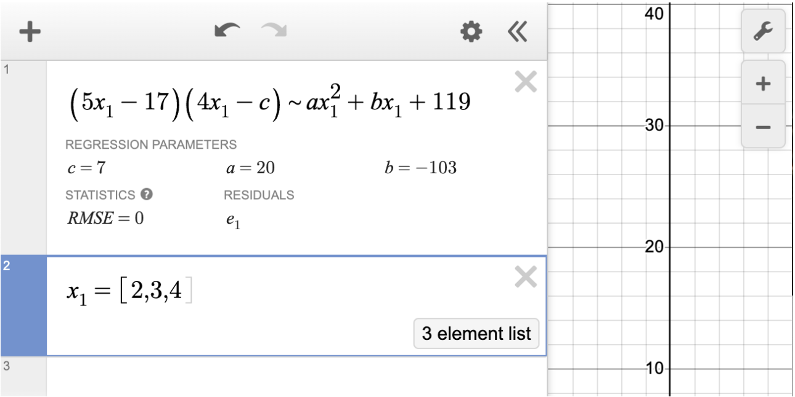
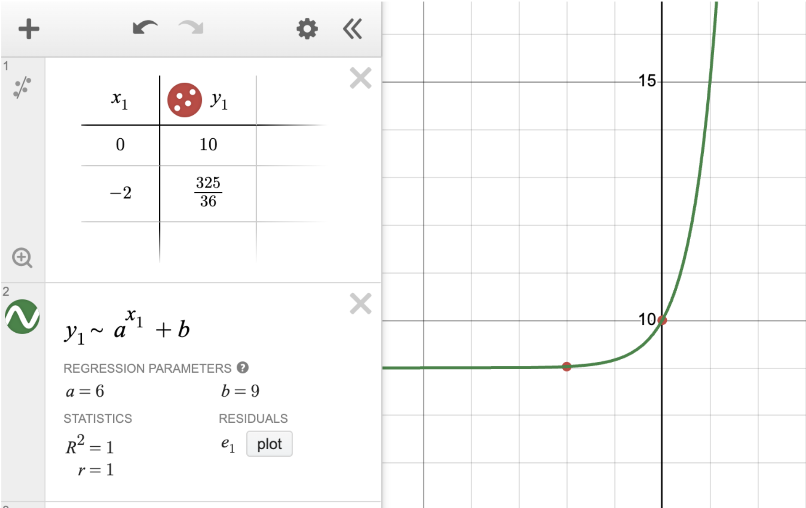

ask me anything, i'll help you cook
Desmos Chat
SAT Math
ask me anything, i'll help you cook
Here, you'll learn SAT math with an AI powered Desmos graph; tricks, tips, and visualizers will all help you ace your next exam.
Here's a quick look at what you can do.
Ask Korah about any SAT problem, equation, or dataset and watch it appear on the Desmos graph instantly. Zoom, pan, and interact with your graphs to build deeper understanding of mathematical relationships.
Today, nearly every top scorer on the SAT uses the calculator and regressions to solve every problem on the math section. Korah will teach you how to do the same exact thing, just ask.

Instead of solving by hand, use the Desmos calculator to solve problems at lightning speed. Apply algebraic reasoning and regressions through methods for any type of equation.

Desmos Chat is new and still in active development. Some features may not work perfectly yet. If you encounter any bugs or have feedback, please report them to:
oscareucedaf1@gmail.com